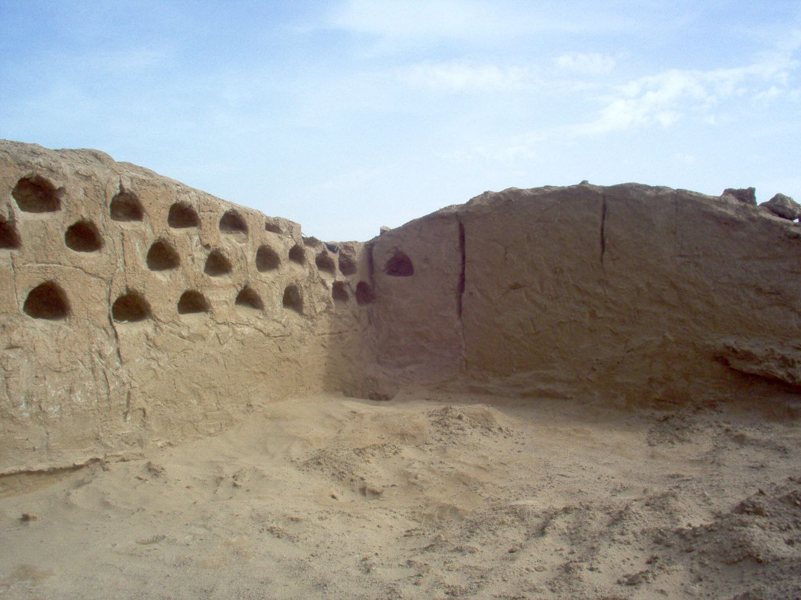
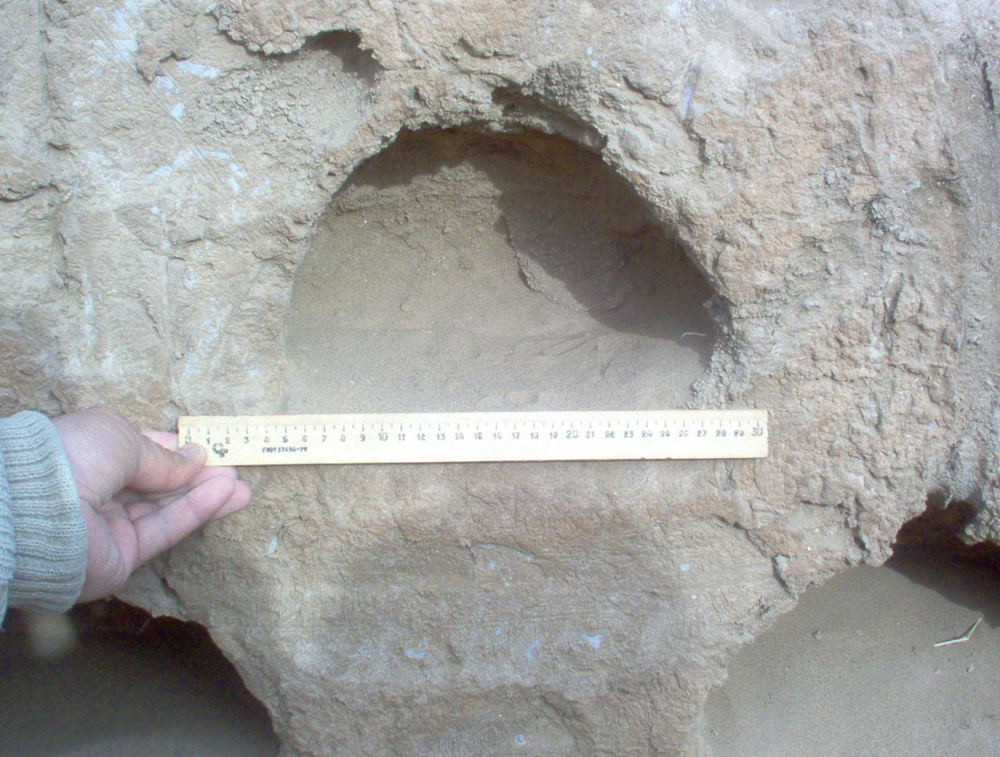

"OXUNLAR QO‘RGʻONI"
1. Me’moriy inshootning nomi:
"OXUNLAR QO‘RGʻONI"
2. Me’moriy inshoot tiklangan yil:
IX – XIII asrlarga oid
3. Me’moriy inshoot joylashgan manzil:
Xorazm viloyati Xiva tumani “Avazdunak” qishlog‘ida hududida joylashgan.
4. Me’moriy inshootning qurilish materiallari:
Xom g‘isht, paxsa - guvala, qum, alebastr-ganch, yog‘och
5. Inshootning bosh fasadi h.k.lar:


6. Me’moriy inshootning o‘lchamlari
20-25 gektarni tashkil qiladigan hududni egallaganligidan bu joy katta istehkom bo‘lgan.
7. Me’moriy inshoot to‘g‘risida tarixiy ma’lumot:
Qadimgi va o‘rta asrlardagi Xorazm yodgorliklariga oid buyuk asarlar nashr qilingan va amaliy muomalaga kiritilgan. Ammo, ushbu manba va risolarning birontasida Xiva tumanidagi “Avazdunak” qishlog‘idagi 10-15 m qum barxanlari tagidan topilgan, yaxshi saqlangan paxsa devor qoldiqlari to‘g‘risida ma’lumotlar uchramaydi. Topilgan paxsa devor juda toza soz tuproqdan qurilgan bo‘lib, ushbu devorda o‘rta asrlarga oid “kaptarxona”lar joylashgan. Olingan manbalarga qaraganda, yodgorlikda XI – XIII asr boshlarida ajdodlarimiz hayot kechirishgan. Aftidan, mo‘g‘ullar istilosidan keyin ham qisqa davr hayot davom etgan bo‘lishi ehtimol. Tadqiqot natijalari shuni ko‘rsatadiki, mazkur yodgorlik aniq rejalashtirilgan, o‘ziga xos tokchalari bilan bezatilgan va xo‘jalik xonalariga ega bo‘lgan shahar tashqarisidagi uy yoki qo‘rg‘on ekanligini tasdiqlaydi. Bunday inshootlar asosan to‘g‘riburchakli ikki qavatli binolardan tashkil topgan bo‘lib, devorlari juda ko‘plab tokchalar bilan qoplangan.
8. Me’moriy inshootning texnik holati:
90% devor konstruksiyalari ekologik va texnogen ta’sirlar natijasida yo‘qolib ketgan.
BOSH SAHIFAGA QAYTISH